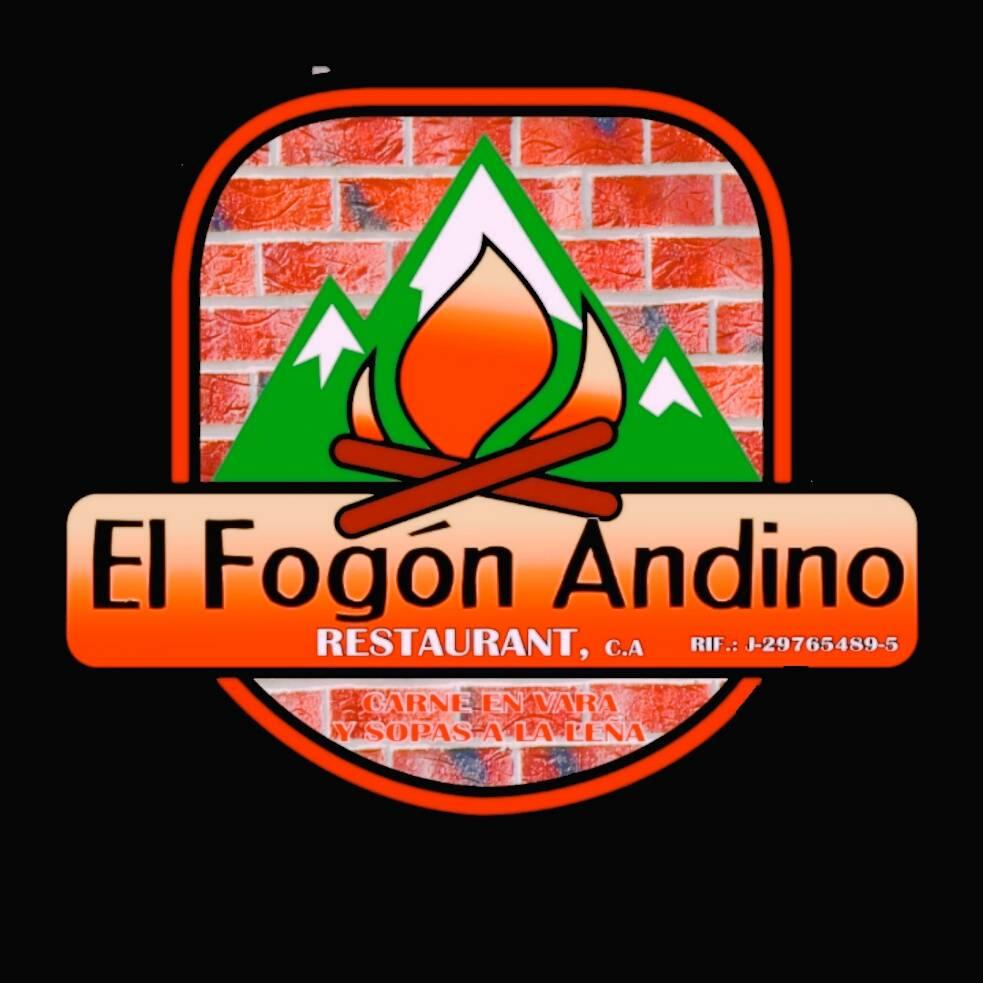

El Fogón Andino
Un espacio clásico para disfrutar desayunos tradicionales y caldos reconfortantes.
Ver localAl mediodía, disfruta de una auténtica Arepa de Trigo rellena de pisillo, un clásico indiscutible.
Una parada obligatoria en el centro de la ciudad para endulzar la tarde con abrillantados e higos rellenos.
Sube hacia la montaña y termina la jornada combatiendo el frío con un reconfortante Calentadito o Chicha Andina.